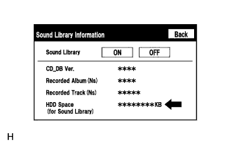

АУДИОВИЗУАЛЬНАЯ СИСТЕМА (для моделей с системой навигации) > Аудиозаписи не записываются на жесткий диск |
| 1.ПРОВЕРЬТЕ НАСТРОЙКИ ЗВУКОВОЙ БИБЛИОТЕКИ ЖЕСТКОГО ДИСКА НА ЭКРАНЕ "SOUND LIBRARY INFORMATION" |
Выберите "Sound Library Information" (данные звуковой библиотеки) (проверьте настройки звуковой библиотеки) (Нажмите здесь).
 |
Выберите "ON (ВКЛ)" для функции "Sound Library" (звуковая библиотека).
Проверьте, возможна ли запись.
|
| ||||
| OK | ||
| ||
| 2.ПРОВЕРЬТЕ СВОБОДНОЕ ПРОСТРАНСТВО НА ЖЕСТКОМ ДИСКЕ |
Выберите "Sound Library Information" (данные звуковой библиотеки) (проверьте настройки звуковой библиотеки) (Нажмите здесь).
|  |
Проверьте объем свободного пространства на жестком диске на экране настройки звуковой библиотеки.
| Результат | Следующий шаг |
| Недостаточное свободное пространство на жестком диске | А |
| Достаточное свободное пространство на жестком диске | B |
|
| ||||
| А | ||
| ||
| 3.ПРОВЕРЬТЕ, ВКЛЮЧЕНО ЛИ ПИТАНИЕ АУДИОСИСТЕМЫ |
Проверьте, включено ли питание аудиосистемы.
|
| ||||
| OK | |
| 4.УБЕДИТЕСЬ, ЧТО УСТАНОВЛЕН РЕЖИМ ЗАПИСИ AUTO |
Убедитесь, что установлен режим записи AUTO (автоматический).
|
| ||||
| OK | |
| 5.ПРОВЕРЬТЕ КОМПАКТ-ДИСК |
Убедитесь в том, что диск не деформирован и не треснут.
|
| ||||
| OK | |
| 6.ОЧИСТИТЕ КОМПАКТ-ДИСК И СНОВА ПРОВЕРЬТЕ ЕГО |
 |
Протрите диск мягкой тканью от центра к краям в радиальном направлении.
|
| ||||
| OK | ||
| ||
| 7.ВЫПОЛНИТЕ ПРОВЕРКУ НА ДРУГОМ АВТОМОБИЛЕ С СИСТЕМОЙ НАВИГАЦИИ С ЖЕСТКИМ ДИСКОМ |
Проверьте, нормально ли воспроизводится компакт-диск на другом автомобиле с системой навигации с жестким диском.
|
| ||||
| OK | ||
| ||